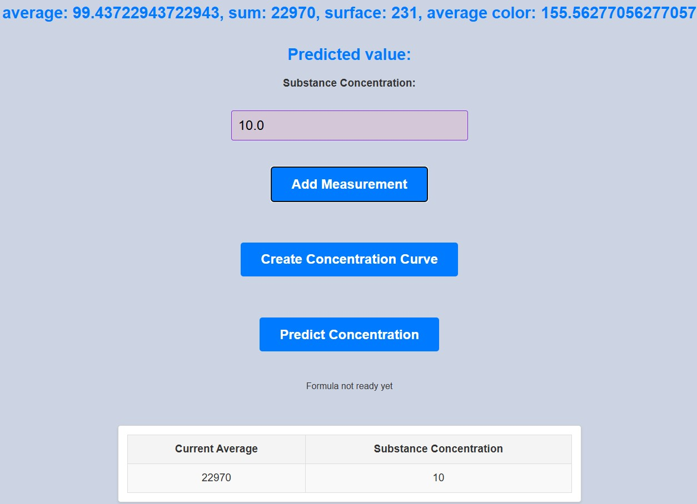
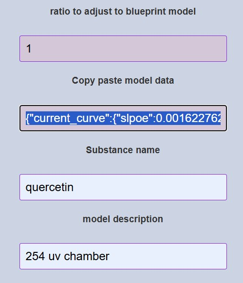

Step 1: Positioning the Smartphone and Marker
- Position your smartphone camera so that the cross-shaped marker is centered in the camera app’s viewfinder. The center point of the camera app should align with the marker’s cross center.
- Rotate the smartphone so that the top border of the phone faces the same direction as the arrow on one arm of the marker.
Step 2: Capturing TLC Plate Images
- Move the plate so that the spot intended for analysis is positioned under the central pointer in the camera app. Capture the image using pro mode.
- Move the plate to an area without any spots (a clear section of the plate) under the central pointer. Capture another image using the same pro mode settings.
Step 3: Uploading Images
- Upload the spot image to the "Data Image" file input.
- Upload the clear plate image to the "Background Image" file input.
- Click the "Process Image" button to proceed or reproceed after parameters change.
Step 4: Spot Detection Parameters
- Percent of Darkest Pixels: This input determines how much of the total pixels are included in intensity calculations.
- Constant Threshold: If the "Use Constant Threshold" checkbox is selected, the app uses a fixed threshold value. For example, entering 238 includes all pixels with values equal to or lower than 238.
- Box Size Slider: Crops the image to a box size determined by the slider. From the image's center, n/2 pixels in each direction are analyzed.
Step 5: Image Processing Results
Below the input fields, a preview of the cropped and grayscaled image is displayed. Once the "Process Image" button is clicked, the following results are shown:
- Average pixel intensity
- Average threshold
- Total spot intensity
- Total spot threshold
Step 6: Concentration Curve and Prediction
- If a concentration curve is available, predictions are made automatically when processing the image. To manually trigger predictions, click the "Predict Concentration" button.
-
To create a concentration curve:
- Enter the real substance quantity or concentration in the "Substance Concentration" field for each measurement.
- Click the "Add Measurement" button after each entry.
- Once all measurements are added, click "Create Concentration Curve." The data will be displayed in a white box below the table.

Step 7: Model Scaling and Metadata
- Use the "Ratio to Adjust" input to scale the total spot intensity to match the source model used for the concentration curve. This accounts for differences such as varying camera resolutions.
-
Add metadata for standardization:
- Enter a name for the substance in the "Substance Name" field.
- Provide a description of the model in the "Model Description" field.
Step 8: Sharing Model Data
Use the "Copy Paste Model Data" field to share model data with other users. The data updates automatically when the cursor enters this field, so you can copy the latest data. When pasted into another app instance, the data is automatically applied.
